Modernizar una marca con casi cuatro décadas en la ciudad — sin perder el símbolo que la hizo reconocible.
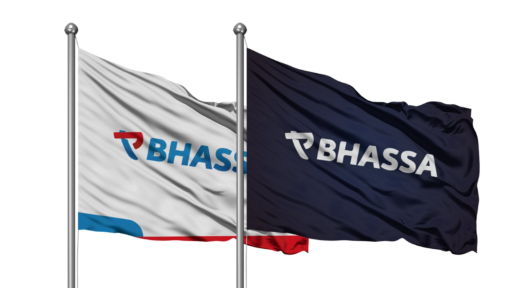
Bhassa es la cara de Toyota en el centro del país: tres concesionarios en tres ciudades. Tenían algo que casi ningún cliente tiene — un símbolo querido, heredado, reconocido por toda la comunidad.
Y por eso mismo, no querían tocar nada. Durante años el rebranding fue un tema vedado: el riesgo de perder el reconocimiento ganado pesaba más que la necesidad de actualizarse. El problema no era una marca fea. Era una marca que se estaba quedando atrás de la era digital y no se animaba a moverse.
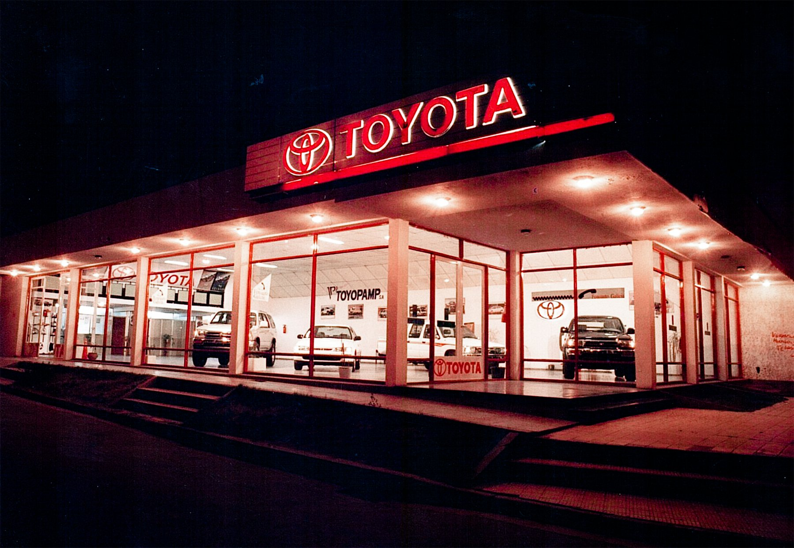
No nos contrataron para rebrandear. Entramos en 2015 como generadores de contenido, y nos tomó cinco años de confianza llegar al momento en que el cliente estuvo dispuesto a escuchar.
La oportunidad apareció con la inauguración de una sucursal nueva. Pero vino con una condición innegociable: la forma del isologotipo no se toca. Esa silueta —la combinación de la T y la P de ToyoPamp— era herencia familiar, no decisión de diseño.
Ahí estuvo el verdadero desafío. No descartar el símbolo, sino redibujar sus líneas: modernizar el trazo, depurar la geometría y devolverle vigencia sin que nadie en la ciudad dejara de reconocerlo. Respetar la forma para poder cambiar todo lo demás.
Un solo color plano, siglas en minúscula y un trazo pensado para la cartelería impresa de los noventa. Reconocible en la ciudad, ilegible en una pantalla chica.
La misma silueta, con geometría depurada, dos tonalidades, mayúsculas y 9° de inclinación. Nadie en la ciudad dejó de reconocerla.
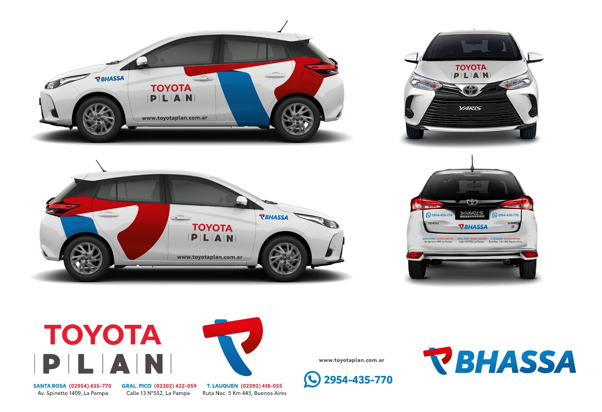
Coordiné el diseño y la puesta a punto de todas las piezas que hoy componen el lugar: ploteos, murales, iluminación decorativa, cartelería interna, ambientación completa del sector de oficinas y una pared verde viva en el salón.
Todo esto es anterior al rebranding: se hizo con la identidad previa, la que se ve en estas fotos. Fue el proyecto que terminó de construir la confianza que años más tarde permitió sentarse a discutir la marca.
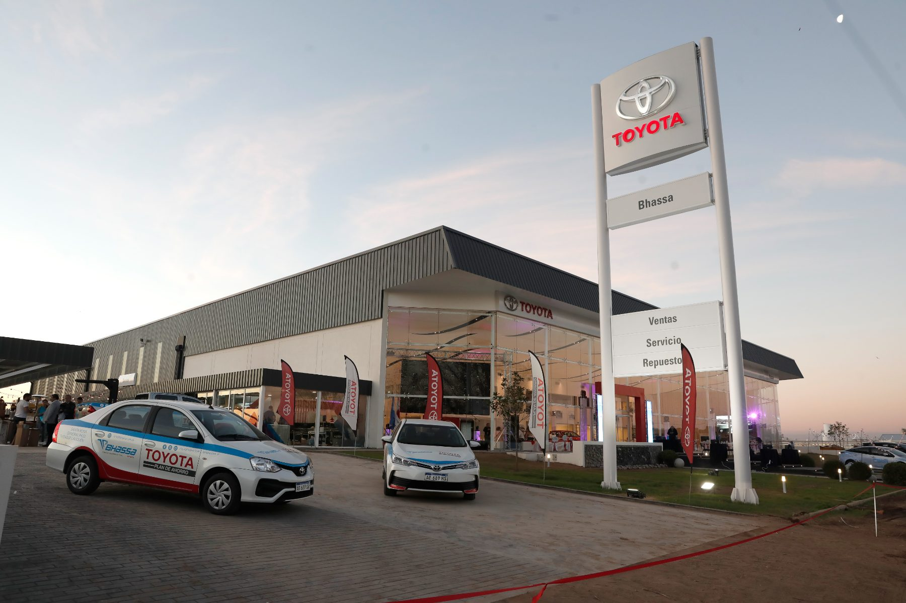
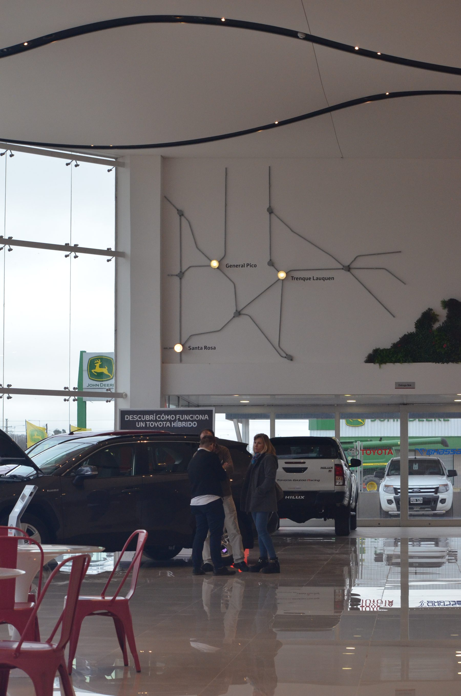
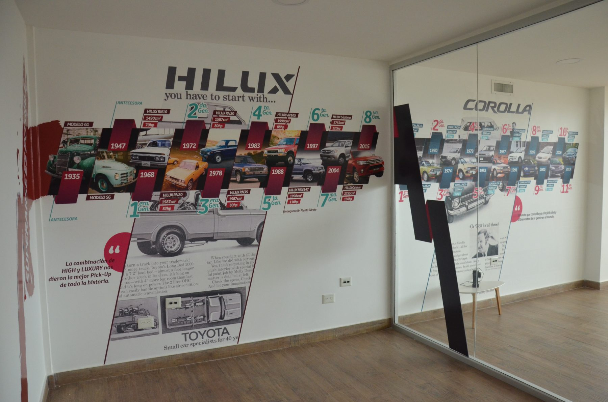
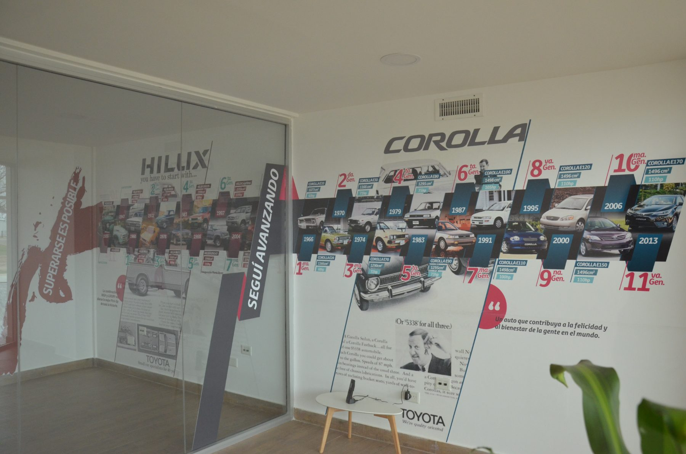
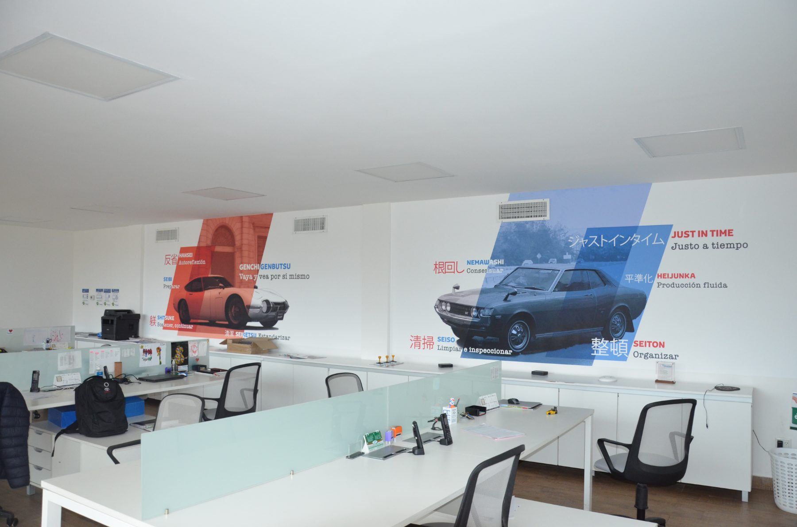
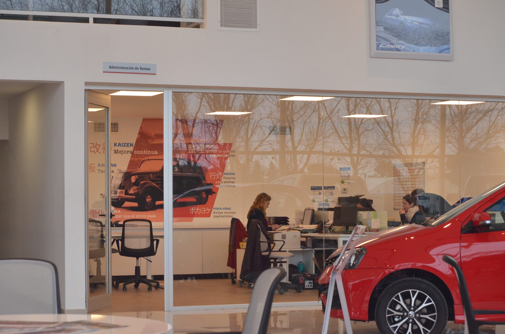
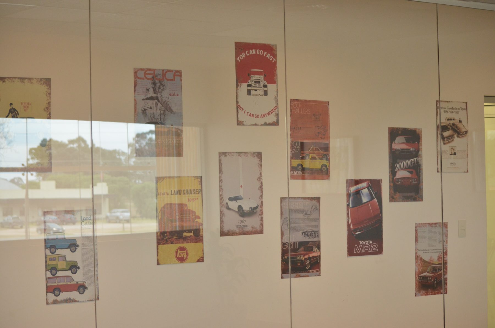
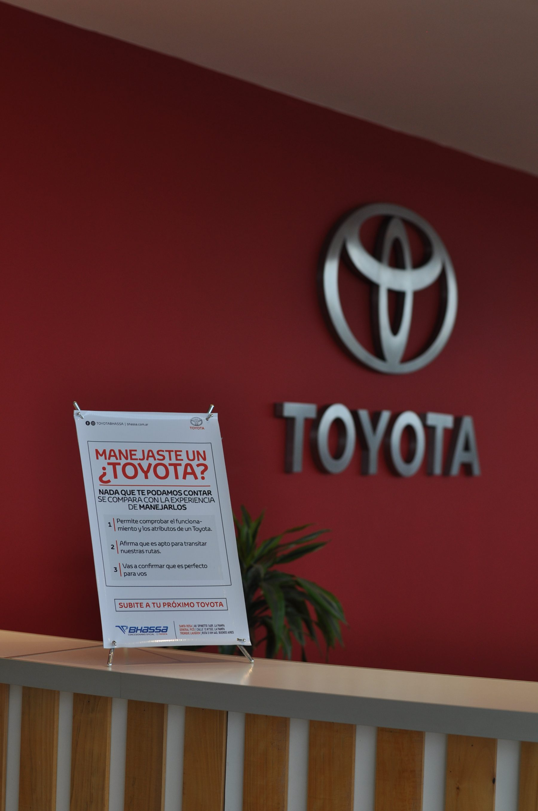
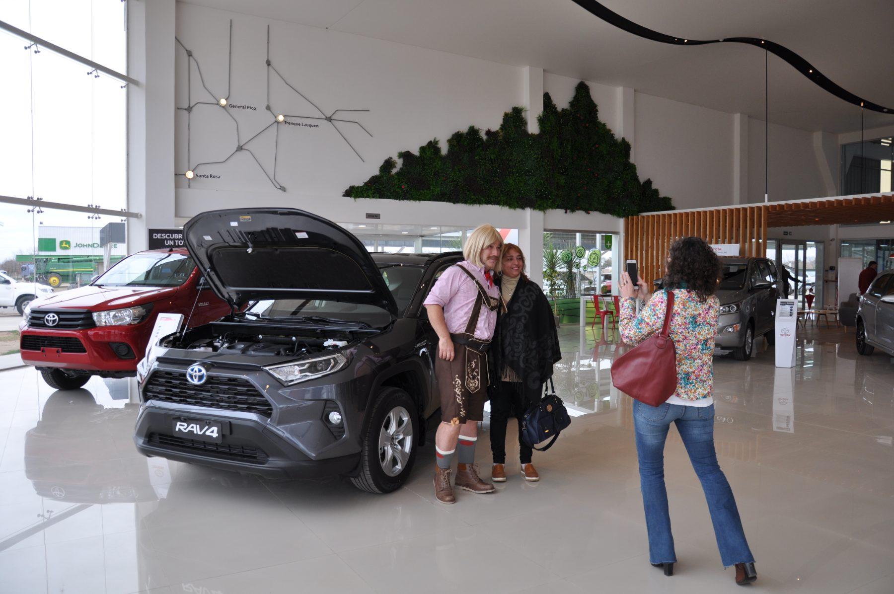
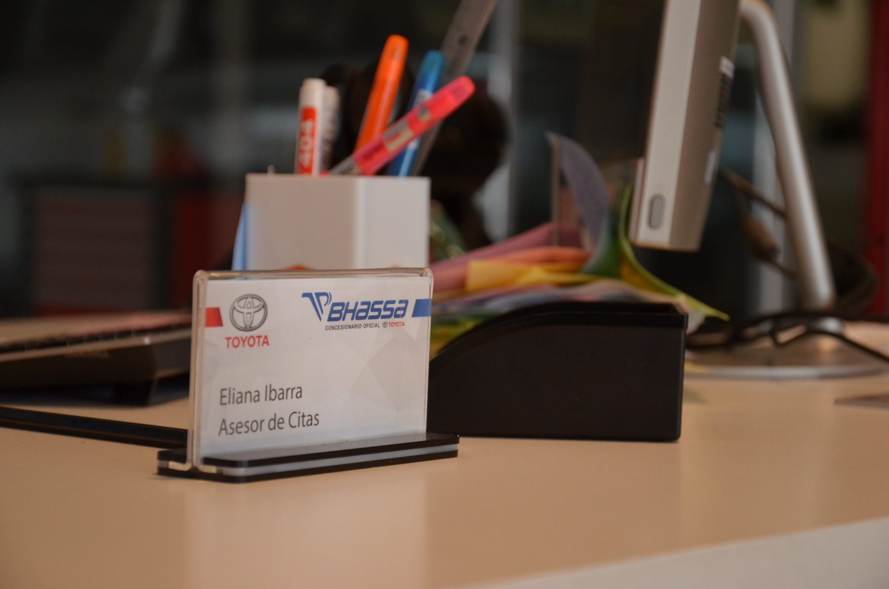
Apenas cerrado el rebranding vino una kermesse por los 30 años donde los dos logotipos todavía convivían — pero el viraje de estética ya se notaba en cada pieza.
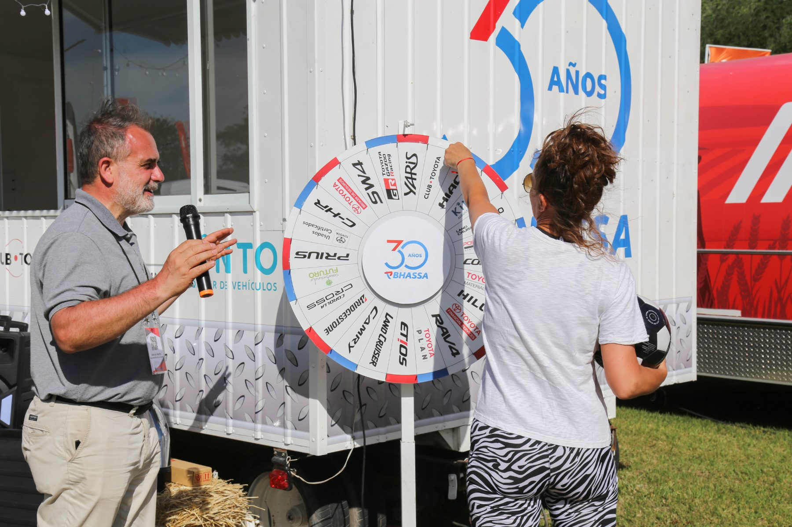
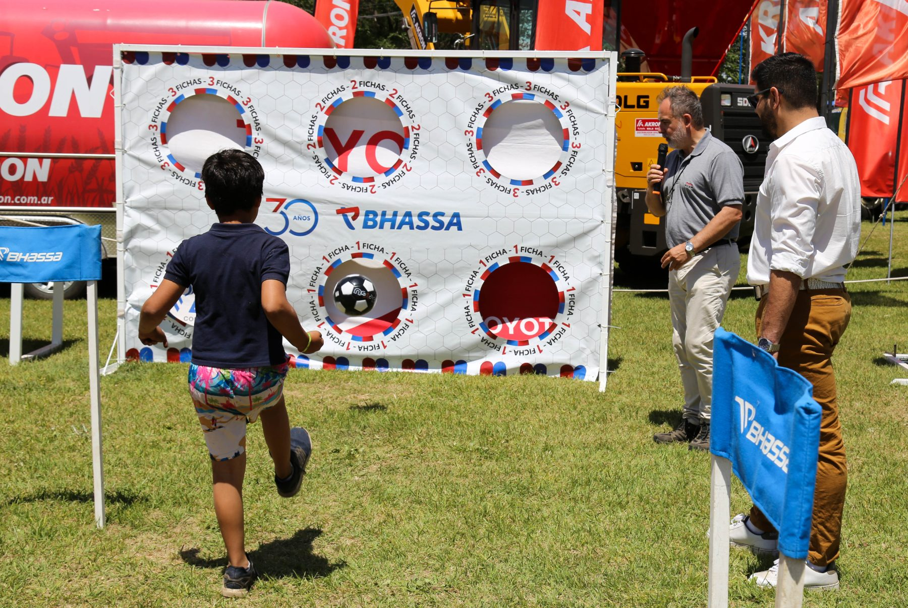
Adopción instantánea, interna y externa. Cero resistencia, salvo respetar la silueta heredada.
Los dueños, que dudaban del cambio, terminaron adoptándolo. Convencer a quien duda vale más que un cliente que ya quería moverse.
El sistema sobrevivió a la centralización de Toyota. Lo que diseñamos a medida siguió vivo incluso cuando la marca global estandarizó todo lo demás.
El equipo la hizo propia. Hoy, mirándolo desde afuera, la marca se usa en todo su esplendor — con más interacción y piezas nuevas que ya no pasan por mí.
El sistema se replicó en sucursales y unidades de negocio nuevas, y hay piezas que siguen en uso años después.
Nueve años como socio creativo del grupo. No un encargo: una relación.
Aprendí a gestionar una marca de forma completa, desde todos los ángulos.
Me llevó a un nivel del que yo no le di valor hasta no verlo desde afuera. Potenció todo lo que vino después.
Eso es lo que hicimos acá: modernizar el sistema completo —del isologotipo a la señalética, del ploteo de flotas al espacio físico— respetando el símbolo que la comunidad ya reconocía.